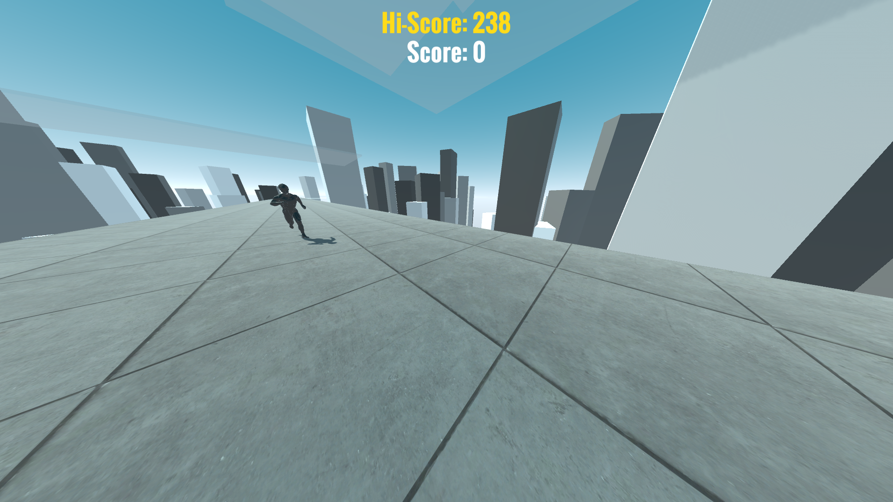
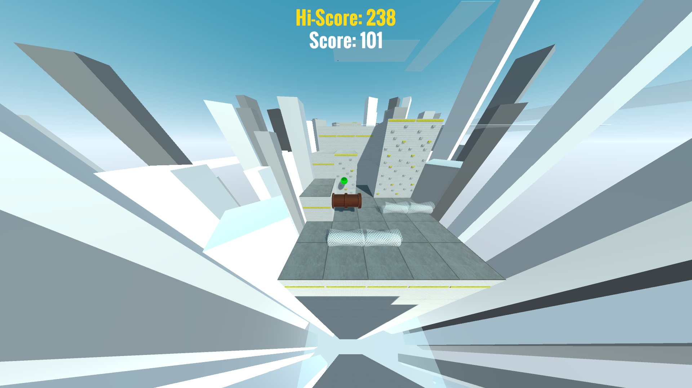
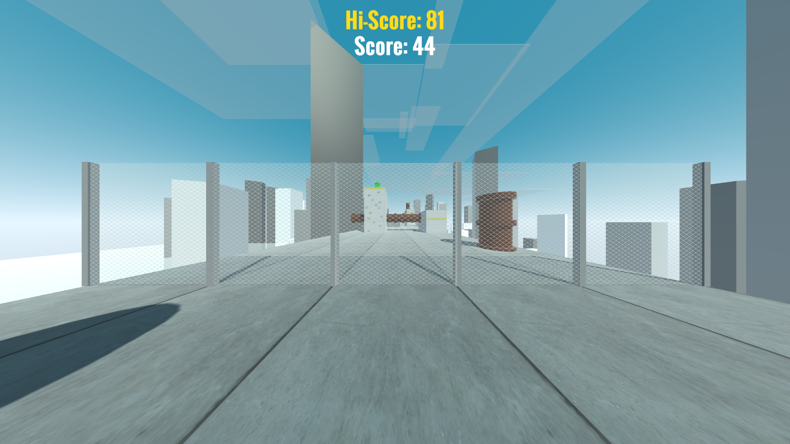

Edge Runner is a simple endless runner game developed in Unity in which we will have to escape through
the rooftops of a procedurally generated city earning points, avoiding falling into the void,
dodging obstacles or fall damage.
UnityC#



In Edge Runner we are a runner who is fleeing from his pursuers on the rooftops of a city.
During the escape we will have to avoid falling into the void and collect green spheres to gain points.
Not only will we have to avoid falling into the void but we will also have to avoid various obstacles by jumping, climbing, crouching, or changing lanes.